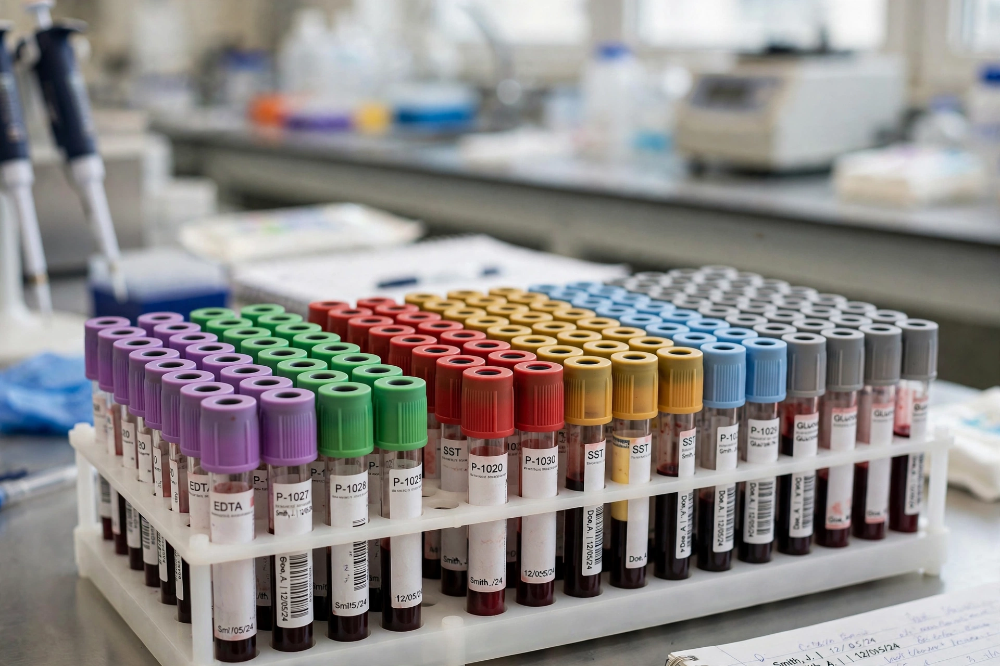

| Blood test | |
|---|---|
 | |
| Sample | Venous (usually), capillary or arterial blood |
| Common panels | Full blood count; urea and electrolytes; liver function |
| Setting | Clinical laboratory; point-of-care devices |
A blood test is a laboratory analysis performed on a sample of blood, usually taken from a vein in the arm by venipuncture or by a finger-prick. Blood tests are among the most common medical tests, used to assess general health, diagnose disease, monitor treatment and screen for risk factors.
The full (complete) blood count measures red cells, white cells and platelets, haemoglobin and red-cell indices, detecting anaemia, infection and bleeding disorders. Biochemistry panels measure electrolytes (sodium, potassium), kidney function (urea, creatinine), liver enzymes and bilirubin, calcium, glucose and HbA1c (for diabetes), and lipids (cholesterol fractions). Other routine categories include coagulation tests (INR for warfarin monitoring), inflammatory markers (CRP, ESR), thyroid function, and iron studies — ferritin and transferrin saturation, used for example in diagnosing haemochromatosis.
Targeted assays include hormone levels, tumour markers such as prostate-specific antigen, antibody and antigen tests for infections (HIV, hepatitis), blood cultures for sepsis, blood typing and crossmatching before transfusion, and genetic or genomic tests central to precision medicine.
Blood is drawn into tubes with colour-coded caps indicating additives (anticoagulants such as EDTA for cell counts, clot activators for serum, citrate for coagulation). Results are compared with reference ranges, but interpretation depends on the patient: some tests require fasting, haemolysis of the sample can falsify potassium, and a value outside the range is not automatically disease — by definition 5% of healthy people fall outside a 95% reference interval for any given test.
Compact devices increasingly perform tests at the bedside or at home — glucose meters, pregnancy tests, lateral-flow antigen tests — trading some precision for speed, with laboratory confirmation where results matter.
See also: Medical test · Transferrin · Prostate-specific antigen